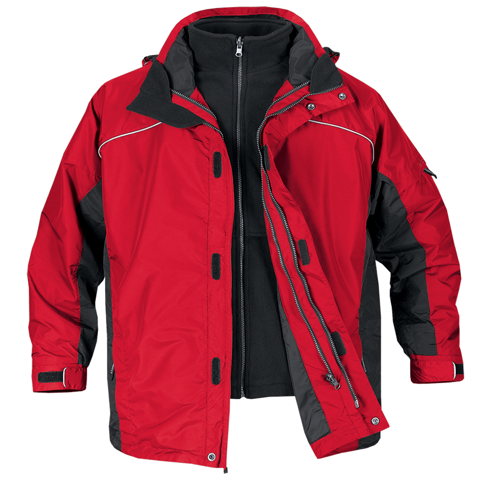
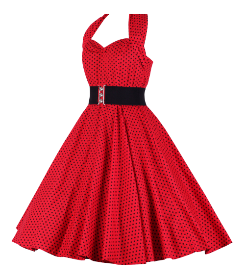
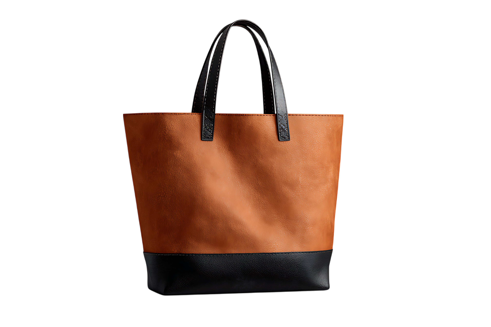

01 — Alfaiataria

Lã fria italianaA Jaqueta
Ombro estruturado, cava funda, forro em cupro. A jaqueta que resolve meia estação inteira e envelhece melhor que a maioria das pessoas.
Nenhuma peça nasce de uma prancha de tendências. Tudo começa num corpo de costas, numa fita métrica e numa pergunta: o que sobra quando você tira tudo?
Cada peça leva trinta e duas horas de costura, sete provas de ajuste e um mês de espera. Não existe coleção rápida.
Duas coleções por ano. Cento e oitenta peças numeradas. Quando esgota, o molde é arquivado e não volta.
Como visto em: Vogue Brasil, Harper's Bazaar, Elle, FFW, Marie Claire, L'Officiel, Casa Vogue e Glamour.
CINZA nasce da recusa do excesso, da tendência e da pressa. Cada peça é desenhada, cortada e costurada no mesmo atelier em São Paulo, por seis mãos que assinam o que fazem.
Não perseguimos a estação. Se o linho de 2025 ficou mais pesado que o de 2024, isso não é erro: é o fio, a chuva, a safra.
— Helena Vasques, diretora criativa
Cada peça recebe um número bordado na etiqueta interna. Quando o drop acaba, o molde é arquivado.

Ombro estruturado, cava funda, forro em cupro. A jaqueta que resolve meia estação inteira e envelhece melhor que a maioria das pessoas.

Decote reto, manga curta e caimento solto. Uma peça, um gesto, e o corpo inteiro resolvido. O linho que amassa bonito e respira no calor.

Estrutura rígida, alça removível, forro em algodão cru. A bolsa que carrega o essencial e nada além.
Escolhemos as fibras que envelhecem com dignidade, como a pele e a memória. Deslize para revelar a origem de cada fio que cruza o nosso atelier.
Do primeiro traço à última prova, uma peça CINZA leva de quatro a seis semanas. É o tempo que o tecido pede, não o que o calendário exige.
O molde nasce sobre o corpo, com alfinetes e tecido cru. Nada de prancha digital: a forma precisa ceder antes de existir.
Tesoura, peso e giz. Cada peça é cortada individualmente, uma a uma, para respeitar o caimento do fio.
Trinta e duas horas entre máquina e mão. As casas de botão são feitas à mão e o forro é preso por pontos invisíveis.
Sete provas, ajustes finos, etiqueta numerada bordada. Só sai do atelier quando cai perfeitamente de costas.
Mais de trezentas avaliações verificadas. Nenhuma delas foi comprada com peça emprestada.
Vesti a jaqueta e entendi o que é caimento. Não aperta, não sobra: só acompanha.
Comprei o conjunto para uma viagem de dez dias. Usei todos os dias e voltou melhor do que foi.
É a primeira marca nacional que não me fez querer ajustar nada na costureira.
Se a sua dúvida não estiver aqui, escreva para oi@cinza.studio. Respondemos em até um dia útil.
Porque é o que o atelier consegue costurar com as mesmas seis mãos, sem terceirizar. Aumentar a produção significaria abrir mão do acabamento à mão, e isso descaracteriza a marca.
Trabalhamos do 34 ao 44, com modelagem própria. Cada peça tem a tabela de medidas completa na página do produto e, se necessário, ajustamos sob medida por um custo adicional.
A coleção é padronizada, mas oferecemos ajuste de barra, cintura e manga incluso no preço para peças reservadas na lista de espera.
As peças são produzidas após a confirmação da reserva. O prazo é de 25 a 35 dias, com frete incluso para todo o Brasil e rastreamento completo.
Lavagem a seco para alfaiataria e couro; o linho aceita lavagem delicada a frio. Cada peça vem com um cartão de cuidados escrito à mão.
Esgota em média em doze dias. O molde é arquivado e não retorna. Quem está na lista recebe o aviso 48 horas antes da abertura pública.
Entre na lista. Você recebe o aviso 48 horas antes da abertura pública e escolhe primeiro.